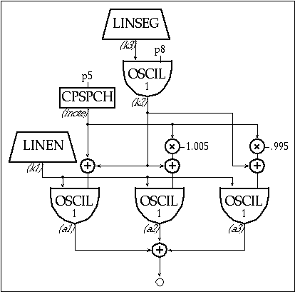

To add some delayed vibrato to our chorusing instrument we use another oscillator for the vibrato and a line segment generator, linseg, as a means of controlling the delay. linseg is a k-rate or a-rate signal generator which traces a series of straight line segments between any number of specified points. The Csound manual describes it as:
kr linseg ia, idur1, ib[, idur2, ic[...]]
ar linseg ia, idur1, ib[, idur2, ic[...]]
Since we intend to use this to slowly scale the amount of signal coming from our vibrato oscillator, we'll choose the k-rate version. The i-rate variables: ia, ib, ic, etc., are the values for the points. The i-rate variables: idur1, idur2, idur3, etc., set the duration, in seconds, between segments.
instr 5
; toot5.orc
irel
=
.01
; set vibrato release time
idel1
=
p3 * p10
; calculate initial delay (% of dur)
isus
=
p3 - (idel1 + irel)
; calculate remaining duration
iamp
=
ampdb(p4)
; p4=amp
iscale
=
iamp * .333
inote
=
cpspch(p5)
; p5=freq
k3
linseg
0, idel1, p9, isus, p9, irel, 0
; p6=attack time
k2
oscil
k3, p8, 1
; p7=release time
k1
linen
iscale, p6, p3, p7
; p8=vib rate
a3
oscil
k1, inote*.995+k2, 1
; p9=vib depth
a2
oscil
k1, inote*1.005+k2, 1
; p10=vib delay (0-1)
a1
oscil
k1, inote+k2, 1
out
a1+a2+a3
endin
;toot5.sco
f 1
0
4096
10
1
;ins
strt
dur
amp
frq
atk
rel
vibrt
vibdpth
vibdel
i5
0
3
86
10.00
.1
.7
7
6
.4
i5
4
3
86
10.02
1
.2
6
6
.4
i5
8
4
86
10.04
2
1
5
6
.4
e

Toot 5: Vibrato